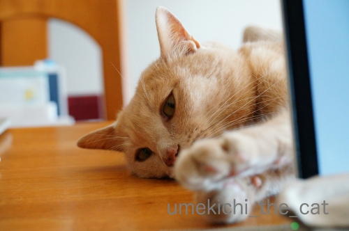
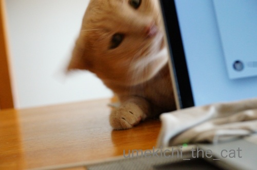
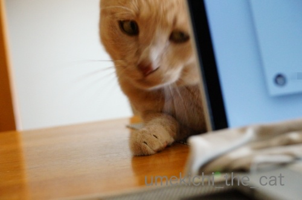
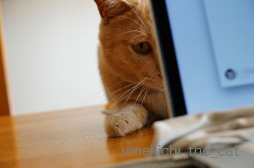
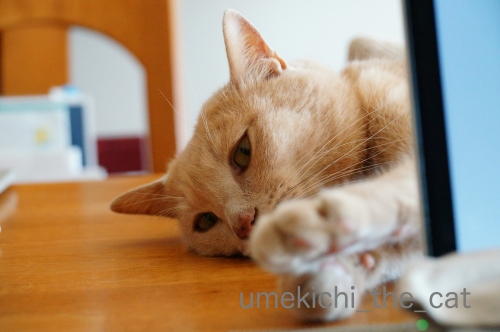
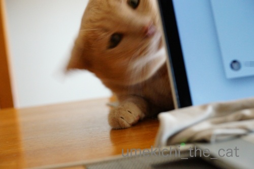
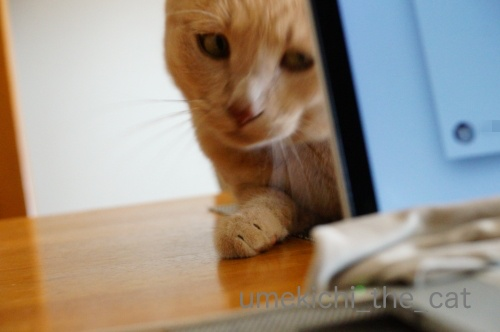
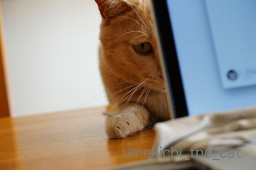

手も出る、命令も出る [梅吉]
PCの後ろで寝ている梅吉さん。
退屈になると

お手手が伸びてきますよ。

あ、しかもダブルハンドなんて反則です0(≧▽≦)0

ぎゅ〜ん

もっと退屈になると画面クリーナーを狙ってきます。

![[猫]](https://blog.ss-blog.jp/_images_e/101.gif) えいっ！
えいっ！

猫ドリル？

ぶるるんっ

ちょっと弱いけど、猫ドリル認定いただけるでしょうか・・・

じーっと見つめ続けているのは
「しゃしゃっと うごかしてや」と下僕に命じていらっしゃるのです(⌒-⌒;
 ↑ガブッと一押し↑
↑ガブッと一押し↑
先月29日、なんばのエディオンに行ってきました。最近出来た大型店舗です。
目的はここ、９階にあるなんばラーメン一座。
こんなお店が出店してます。みなさんご存知のお店はあるでしょうか＾＾
お目当のお店は札幌からの出店「吉山商店」。
札幌では2006年の開業っていうことなので私が札幌にいた時からあったお店。
でもその頃は有名店ではなかったです（きっぱり）
成長して関西まで進出してきたんですね・・・感慨深いわぁ。
本店は東苗穂（なえぼ）の刑務所の近く。
札幌人以外は「はぁ？」って感じかと思いますが
アクセスの良くない車じゃなきゃ行けない様なところにあります。
写真はおっとが食べた焙煎辛味噌ラーメン。私は焙煎ごまみそラーメン。
もやしと玉ねぎが入ってて（もっと量が多いとなお良し）生姜が効いている、ラードが多め。
札幌の味噌ラーメンしてました（笑）
大阪でも「札幌ラーメン」を名乗っているお店に何店か行ったことがありますが
（札幌から進出してきたお店ではない系）
どこもぬるくて（ラードが効いてない）スープのコクが物足りなくて・・・
札幌の味噌ラーメンで育った口にはお味噌汁に麺が入っている様に感じるんですよねw
吉山商店、とっても美味しかったです。
札幌の味噌ラーメンを味わってみたい方、お勧めしますよ＾＾
ただし、並びます！
開店時間に到着しましたが運良く1回転目のラストで入店。
食べている間も行列は長くなるばかりでした。
で、この日はG20の二日目。
なんばは規制エリアだったので警官の姿をたくさん見るかな？と思ったのですが
高島屋〜エディオンの付近では一人も見かけませんでしたよ。
いつもの大阪のいつもの風景でした。
なんばの別の場所で北海道警察の方を発見！
（おっとが仕事帰りに激写）
遠いところお疲れーっす！
道ゆくおばちゃんが道警の警官と気づいて
「にいちゃん、暑いやろ？」「いや〜、なまら暑いっす！」と
やり取りしていたそうですよ(*>艸<)
G20、ちょっといい話？
退屈になると
お手手が伸びてきますよ。
あ、しかもダブルハンドなんて反則です0(≧▽≦)0

ぎゅ〜ん
もっと退屈になると画面クリーナーを狙ってきます。
猫ドリル？

ぶるるんっ

ちょっと弱いけど、猫ドリル認定いただけるでしょうか・・・

じーっと見つめ続けているのは
「しゃしゃっと うごかしてや」と下僕に命じていらっしゃるのです(⌒-⌒;
先月29日、なんばのエディオンに行ってきました。最近出来た大型店舗です。
目的はここ、９階にあるなんばラーメン一座。
こんなお店が出店してます。みなさんご存知のお店はあるでしょうか＾＾
お目当のお店は札幌からの出店「吉山商店」。
札幌では2006年の開業っていうことなので私が札幌にいた時からあったお店。
でもその頃は有名店ではなかったです（きっぱり）
成長して関西まで進出してきたんですね・・・感慨深いわぁ。
本店は東苗穂（なえぼ）の刑務所の近く。
札幌人以外は「はぁ？」って感じかと思いますが
アクセスの良くない車じゃなきゃ行けない様なところにあります。
写真はおっとが食べた焙煎辛味噌ラーメン。私は焙煎ごまみそラーメン。
もやしと玉ねぎが入ってて（もっと量が多いとなお良し）生姜が効いている、ラードが多め。
札幌の味噌ラーメンしてました（笑）
大阪でも「札幌ラーメン」を名乗っているお店に何店か行ったことがありますが
（札幌から進出してきたお店ではない系）
どこもぬるくて（ラードが効いてない）スープのコクが物足りなくて・・・
札幌の味噌ラーメンで育った口にはお味噌汁に麺が入っている様に感じるんですよねw
吉山商店、とっても美味しかったです。
札幌の味噌ラーメンを味わってみたい方、お勧めしますよ＾＾
ただし、並びます！
開店時間に到着しましたが運良く1回転目のラストで入店。
食べている間も行列は長くなるばかりでした。
で、この日はG20の二日目。
なんばは規制エリアだったので警官の姿をたくさん見るかな？と思ったのですが
高島屋〜エディオンの付近では一人も見かけませんでしたよ。
いつもの大阪のいつもの風景でした。
なんばの別の場所で北海道警察の方を発見！
（おっとが仕事帰りに激写）
遠いところお疲れーっす！
道ゆくおばちゃんが道警の警官と気づいて
「にいちゃん、暑いやろ？」「いや〜、なまら暑いっす！」と
やり取りしていたそうですよ(*>艸<)
G20、ちょっといい話？

カフェオレ色の梅吉

梅吉 2023年8月10日 永眠


梅吉と出会った譲渡会

犬猫の理由なき殺処分ゼロ
妄想広告
UMEKICHI 光

爆発的に早い！
時々攻撃的！
Thanks to Mr.Boss365
爆発的に早い！
時々攻撃的！
Thanks to Mr.Boss365

猫ドリルは撮るの難しいですよね。やると分かっててもなかなか撮れません。梅吉さんの写真はシャッタースピードを遅くすれば完璧猫ドリルになるでしょう。今回は猫ドリ⋯くらいかな。
by zombiekong (2019-07-04 00:58)
いいお顔してらっしゃる。
でもこんな子がいたらお仕事はかどらないだろうなあ。（と妄想）
お墨付きの札幌味噌ラーメン食べてみたーい、とググったところ
大阪が道外初出店！となっていました。東京にはないようです(T_T)
大阪マラソンの時に行こうかな？！
by liang (2019-07-04 01:20)
梅吉さんのお手々を、こちらからムギュ！っとつかみたいですー。
なんばラーメン一座、知ってるお店はなかったです。ま、私のラーメン知識なんて大したことないですけれど。
オススメの札幌味噌ラーメン、食べてみたいです！あ、でも、もうちょっと涼しくなってからでいいなぁ(笑)。
by ChatBleu (2019-07-04 06:14)
私のPCは画面の後ろは壁なので
お邪魔する時はキーボードの上に乗ってきます＾＾；
by ぽちの輔 (2019-07-04 06:47)
ウププ、梅吉さんったら甘えん坊さんだから
こうやってPCの後ろからちょっかい出すんですねぇ( ^ω^ )
猫ドリル後の真剣な眼差し、下僕は従うしかないですねw
警察官の皆様、お疲れ様でした(_ _)
by ニッキー (2019-07-04 07:11)
PCの後ろで構える梅吉さん 可愛いお手手に思わず笑顔です
G20 終わってから地元のご苦労をよか聞きます ニュースで見る限り 特に成果がなかったのが（ ; ; ）
by チャー (2019-07-04 09:23)
構って欲しい梅吉さん♪
可愛いですねぇ～(#^.^#)
おててでちょいちょい♪
猫ドリル！難しいですよねぇ～
いつやるのか？？
常にカメラを構えてないといけませんよね(;^_^A
by きぃ (2019-07-04 09:29)
梅吉さん、パソコンの裏で色々狙っているのですね！
そしてかまって欲しいのですね(^^)
by ma2ma2 (2019-07-04 09:31)
猫ドリル認定しますよー^^
そんな可愛い顔でドリルされたら、認定決定！！(笑)
ラーメン、せたが屋は食べたことがあるかな。
でも味を全く覚えてない！(笑)
吉山商店は知らない。。。2006年だと、もう東京に居るから知らないのも当然か〜。東苗穂じゃ、ますます知らないｗｗ
うふふ。道警からも応援が来てたのね！
ほんとに遠いところからお疲れ様だこと。なまらが聞けたのが良かった(笑)
by リュカ (2019-07-04 11:14)
書き忘れた(笑)
わたしもコッチに出てきて初めて「札幌味噌ラーメン」と言ってる店（同じく札幌からの進出店じゃない）に入ったとき、味噌汁に麺が入ってるとしか思えなくて、おもわずちゃぶ台をひっくり返したくなりましたｗ
ちゃぶ台じゃなくてカウンター席だったけど(笑)
by リュカ (2019-07-04 11:18)
こんにちは。
PCの後ろの梅吉くん、遊んで欲しいのですね（笑）
画面クリーナー？狙い！！フキフキして欲しいとリクエストです。
猫ドリル？惜しい感じですが、正直３０点？レポート再提出ですね（笑）
吉山商店の「焙煎辛味噌ラーメン」良い色です。ラードを気にした事なかったかな？
小生「どさん子ラーメン」が札幌ラーメンの基準になってます（笑）悲しい・・
G20で警察官も大変でしたが、
大阪人の素晴らしい「おもてなし」を受けた感じですね！？(=^･ｪ･^=)
by Boss365 (2019-07-04 12:14)
甘えん坊の梅吉さん、かわいい構って光線が出てますね^^
ドリルはほんと難しくて、こてつのタイミングもあるし、カメラの設定が間に合わないし、圧倒的に撮り逃す方が多いです^^;
PCの後ろにいるのが賢い！！
ウチのはキーボードに乗るので退去をお願するしかなくもれなくバトル勃発です(≧▽≦)
本家本元の札幌味噌ラーメン！！
大阪の札幌ラーメンはニセモノだと相方がずっと行ってましたので、ぜひ行ってみます(#^^#)
G20の間はホント蒸し暑かったらか、涼しい地方から派遣された警察官のみなさんは大変だったでしょうね^^;
by ゆきち (2019-07-04 12:21)
今、思い出しました。それ！
物陰から手を出すやつ、昔それをよくやってましたよー^ ^
by 小松達也 (2019-07-04 16:15)
梅吉さんったら、可愛いなあ～＾＾
ここで寝てれば気づくはず、時々相手してくれるはず！と信じてる？
動かしてや！って念を送ってる＾＾
道警のおまわりさん、はるばるご苦労さまです！＾＾
by sana (2019-07-04 21:10)
梅吉さんPCの向こうからダブルハンドでアピールですね。
優しい猫ドリル（笑）認定です。
梅吉さんの顔が見えて、良いです（笑）
札幌ラーメンは、やはり味噌ラーメンですね。
札幌に行った時に、有名店で味噌ラーメン食べ田はずですが、すっかり忘れいていました。
スマホもなかったし（笑）
なんばラーメン一座、機会があれば行ってみたいです。
G20がもう昔のことのように感じます。
夫、毎朝の散歩で都道府県の景観を見てきて報告してくれました。
道警は見なかったようです。
難波あたりが担当だったのですね。
by kiki (2019-07-04 21:14)
退屈しのぎ？の梅吉さんが、ちょいちょいして思わず構いたくなりますー。^^)
味噌ラーメン美味しそうですね。生姜やラードが使われているのですね。
むかしインスタントの味噌ラーメンにバターやコーンを乗せて食べていましたが、自分でも何風のラーメンにしたかったのかよく分かってません。。。^^;
北海道警察のおまわりさん暑い中ご苦労様です。
by yes_hama (2019-07-04 22:11)
画面クリーナーを狙う瞳が
意外に優しげというかカワイイ梅吉さん。
ラード、好きなんですよね～。
最近、チャーハンとかもラードほとんど入ってないから
つまらない…
by ふにゃいの (2019-07-04 23:36)
猫ドリル～（ﾟ□ﾟ）
味噌ラーメン美味しそうだけど、私は普通の味噌ラーメンでいいです？
北海道から大阪へ出張かっ、ご苦労様です。
出張手当も結構もらえるのかな？
by 英ちゃん (2019-07-04 23:39)
吉山商店行かれたんですね＼(^o^)／
こんなの札幌味噌ラーメンじゃない！と言われたらどうしようかと思いましたが認定していただき良かった♪
いつか東苗穂刑務所の近くの本店にも行ってみたいです。
by yamatonosuke (2019-07-05 01:20)
猫ドリルーーーーｗ
うちは、狭いところに突っ込むのが好きなウツボでして
時折回転して出てくるという『ウツボドリル』攻撃を
仕掛けてきます(*￣m￣)ﾌﾟｯ
最近ミナミには足を向けていないのですが、こういうところが
出来ているのですね！ラーメン食べたくなっちゃった＾＾
G20、なかなか見れない光景が見れましたよね(笑)
大阪のおばちゃんは遠慮なく話しかけちゃうみたいですねｗ
神奈川県警の方に何やら言っているなーと思っていたら
『うちの甥っ子が神奈川住んでんねん！』と、返しに困るような
ことを話していたようでｗｗｗ
by カトリーヌ (2019-07-05 14:15)
PCの後ろからそんな可愛い手が出てきたらそれはもう相手するしかないですね(≧▽≦)猫ドリル・・・錐くらい？
by palpal (2019-07-05 20:38)
猫ドリル、よく撮れましたね！
梅吉さんは、PCの後ろから手をだすなんて、謙虚〜^^。
にぎにぎしたくなりますね。
くうたんは今日、キーボードの上にいきなり乗ってきてキーを押したから、
画面が真っ暗になって、ギョッとしました☆
梅吉さんを見習ってほしいものです^^;。
by nachic (2019-07-06 00:28)
おや？
一人遊びを楽しんでいるのではなく
「動かして」って言ってたのですね！
by 藤並 香衣 (2019-07-06 01:44)
梅吉さんかまってちゃん光線が出てますね(^^
全国からG20のために駆り出されているそうですから道警もご苦労さまですね。私が見たのは福島県警でした。きちんと制限速度60kmで環状線を走行していましたよ(笑
ラーメン、あまり食べ歩かないので全く詳しくはないですが、その昔、札幌のラーメン横丁で食べたラーメンは、ん？て感じで何もインパクトは感じませんでした。本当に美味しいラーメンは地元の方々が通う店なのでしょうね。にわか旅行者にはたどり着けない場所にあるのかしら。
by marimo (2019-07-06 22:17)
猫ドリル癒されますにゃあ。
by ニコニコファイト (2019-07-07 10:09)
みなさま、お返事ごめんなさいデス＞＜
by ちぃ (2019-07-08 17:51)